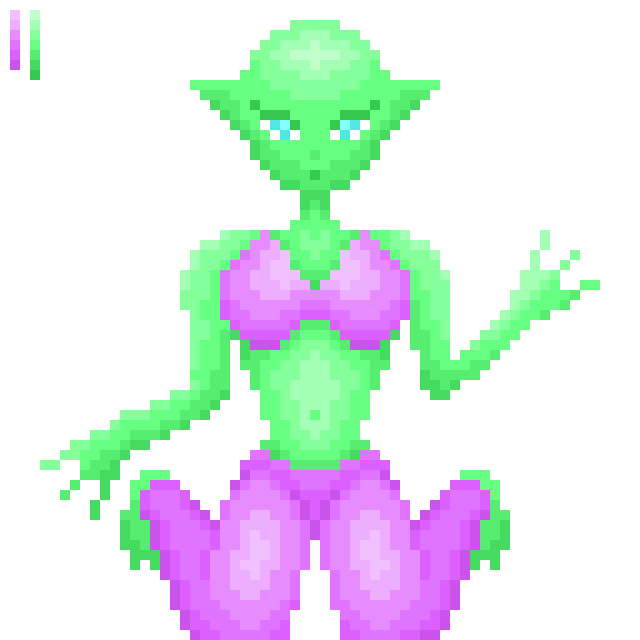
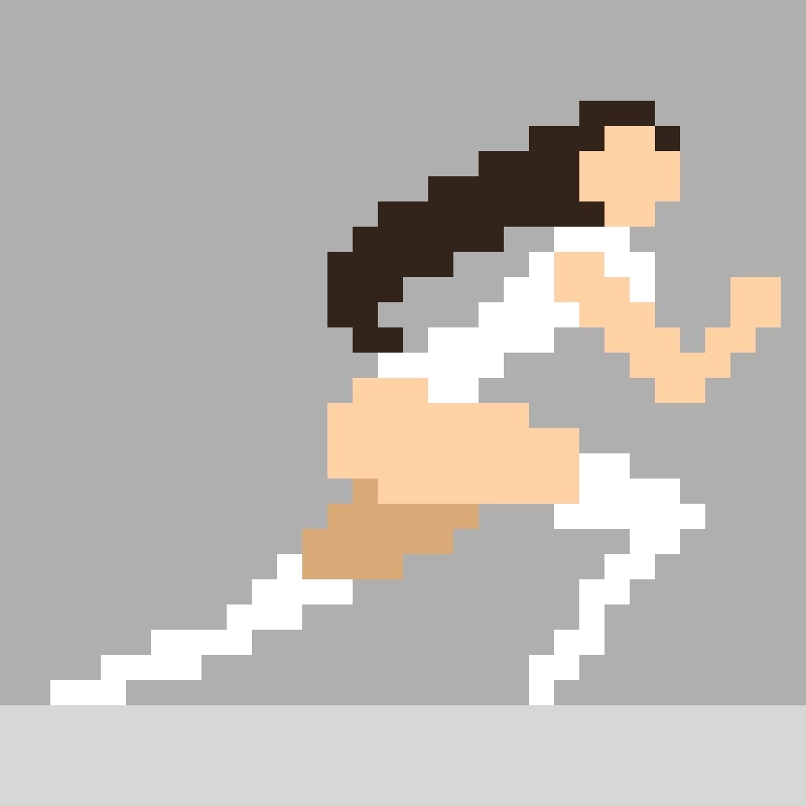
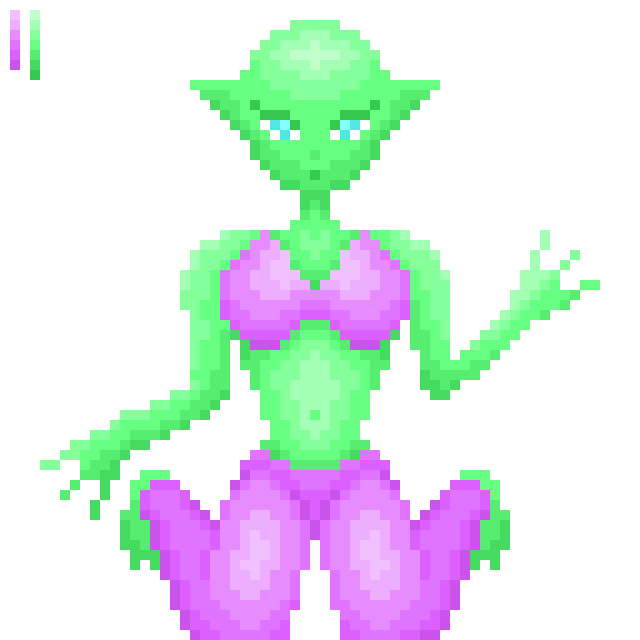
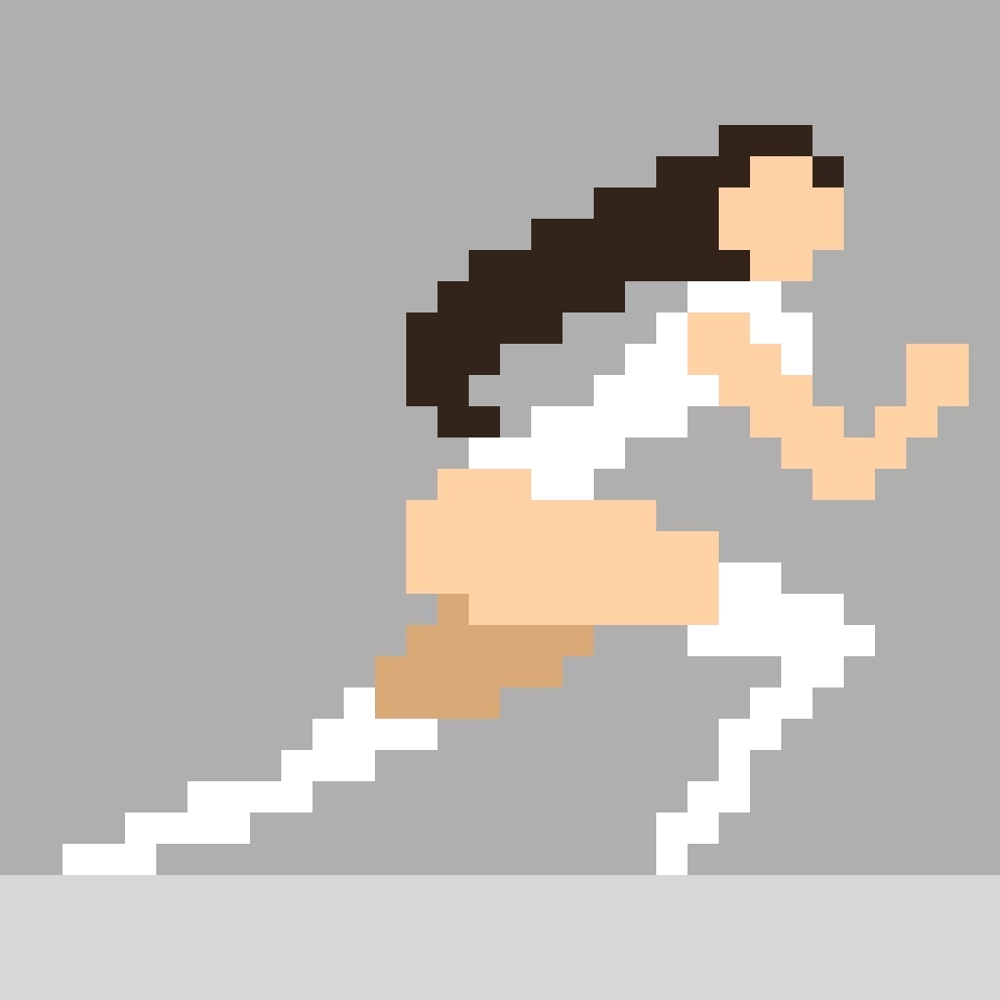
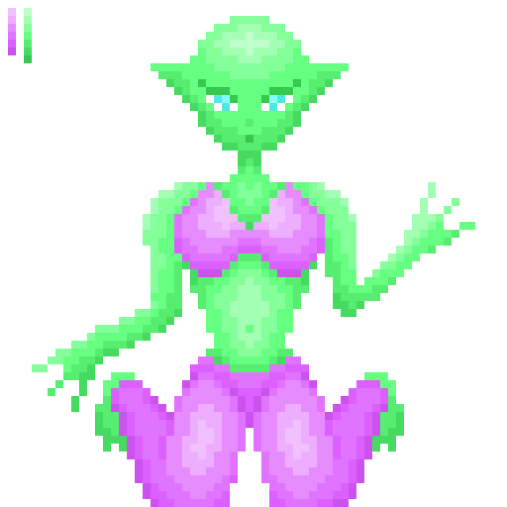
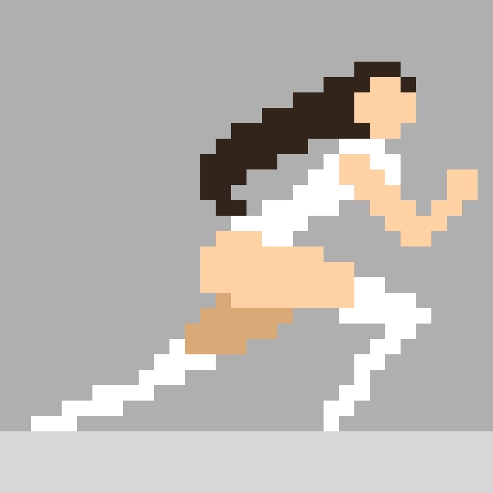

My Art
 



Junior Unity Developer • Game Designer • Pixel Enthusiast
Junior C# and Unity Developer with strong design and branding skills. Passionate about game development, interactive experiences, and clean code. Experienced in both technical and visual aspects of development — from gameplay logic to UI/UX, logo creation, and motion design. Enthusiastic about learning, community-driven initiatives, and delivering meaningful work that combines creativity and functionality.


I'm currently looking for a team of passionate creators. I want to collaborate with developers, artists, and storytellers who care about emotion, style, and experimentation in games. If you're building something thoughtful or experimental, I'm eager to contribute.